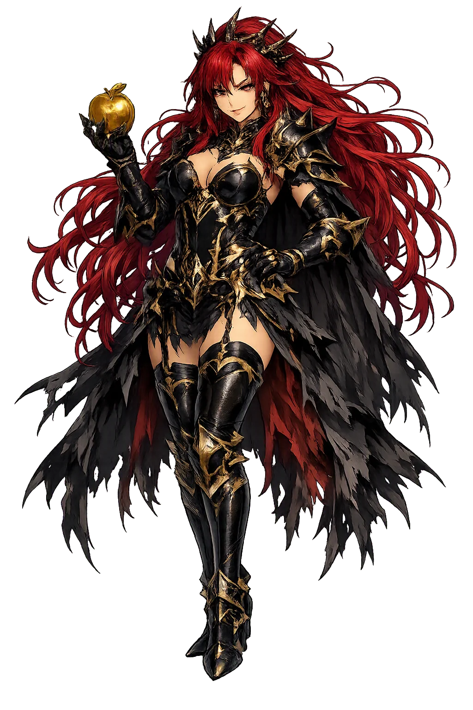
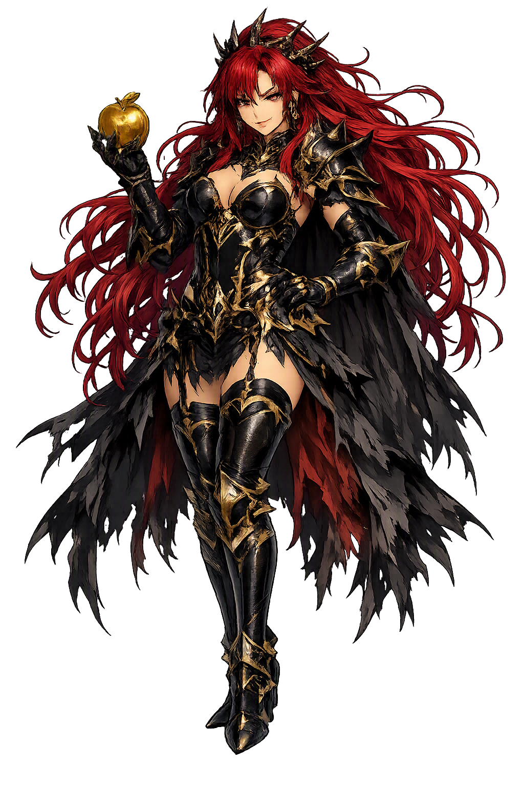

Unicode restoration and ASCII comparison
Ἔρις
The name in its original Greek form. Éris (Ἔρις) is attested in the source tradition — “Strife”. Its acute accents carry the full phonetic and orthographic weight of the source tradition.
eris
Reduced to plain eris, the name loses everything that made it specific: acute accents. What remains is an ASCII string that machines can parse but that no longer speaks with its original voice.
Éris
The Unicode restoration recovers what ASCII flattened. Éris restores acute accents, returning the name to its original written dignity. The domain encodes to Punycode, but the browser displays the truth.
Éris.com → xn--ris-9la.com
The non-ASCII characters in Éris are encoded while the ASCII remains visible. To the DNS, it is Punycode. To humanity, it is Éris.
How Éris is preserved in writing
A bespoke provenance study for Éris is being prepared by the PUNICODEX scholarly team.
Contribute scholarly provenance →How Éris was spoken
Goddess of Strife and Discord — the quarrel that topples kingdoms and the rivalry that builds them
Éris is strife personified — the quarrel, the feud, the rivalry that Greeks both cursed and quietly praised. Born of Nyx, Night herself, she is the one goddess who was never asked to the feast and who therefore changed the world. Yet Hesiod insists there are two Erises: the hateful one who sows war, and the praiseworthy one who stirs even the idle to work. She is the most honest deity in the pantheon — the Greeks' name for a force they could not escape and could not entirely disown.
undefined
undefined
undefined
Stories of Éris
Éris has no temples and almost no cult — her mythology is her meaning. Every surviving story is an anatomy of strife itself: where it comes from, whom it feeds, and how it grows.
In the Theogony (224–232) Hesiod makes Éris a child of Nyx, Night, who bears her without father among the other dark abstractions — Death, Sleep, Blame, Woe. Éris then breeds her own terrible brood, the Kakodaimones: Toil (Ponos), Forgetfulness, Famine, Pains, Combats, Battles, Murders, Manslaughters, Quarrels, Lies, Disputes, Lawlessness, Ruin (Atē), and Oath, who 'troubles most of all men on earth when anyone deliberately swears falsely'. The genealogy is a single claim stated plainly: from one quarrel, every misery descends.
The Works and Days (11–26) opens by amending the poet's own Theogony: 'there was not one kind of Strife after all — on earth there are two.' The first, the elder, men blame, for she 'fosters evil war and slaughter'. The second, whom Zeus set in the roots of the earth, is much better for mortals: she rouses even the shiftless to work, for 'potter rivals potter, carpenter carpenter; beggar envies beggar, and poet poet'. Here Éris is split in two — envy as destroyer and emulation as the engine of all human striving — one of the earliest pieces of moral reflection in Greek literature.
At the wedding of Peleus and Thetis, all the gods were feasted — except Éris, whose very nature barred her from the invitation list. The Cypria, as summarized in Proclus' Chrestomathy, tells that she came anyway and threw among the guests a golden apple 'to be a prize of beauty', inscribed kallistēi — 'for the fairest'. Hera, Athēnâ, and Aphrodítē each claimed it; the dispute was sent for judgment to Paris on Mount Ida, and from that judgment, Proclus says flatly, came the Trojan War. Hyginus (Fabulae 92) retells the same scene. It is the founding myth of discord: exclusion breeds the quarrel that topples a kingdom.
Homer's most haunting personification of war comes in Iliad 4 (440–445), as the two armies close: among them walks Éris, 'the sister and companion of man-slaying Ares — she rears only a small crest at first, but then she fixes her head in the heavens while her feet walk the earth', hurling bitterness into the midst of both hosts. She reappears on the shield of Achilles (Iliad 18.535–540), bloody-robed among the wounded and the dead. The image is precise: discord begins as a murmur and ends with its head in the clouds — and once she stands, no god can pull her down.
Éris exposes something unusual about Greek religious thought: its willingness to personify what it disapproved of. She has essentially no cult — no sanctuary, no festival, no priesthood — yet the poets cannot write a war without her. Hesiod's two Erises show the tradition arguing with itself: strife is the curse of mankind and, simultaneously, the condition of every human excellence, for without rivalry the potter never improves his pot. The apple myth extends the insight into politics: the quarrel was not caused by wickedness but by a superlative, by the mere existence of 'fairest' among three goddesses. To the Greeks, Éris was less a villain than a diagnosis — the recognition that conflict is not an interruption of the cosmic order but one of its permanent residents, daughter of the Night that precedes all things.
Enter Extended Lore